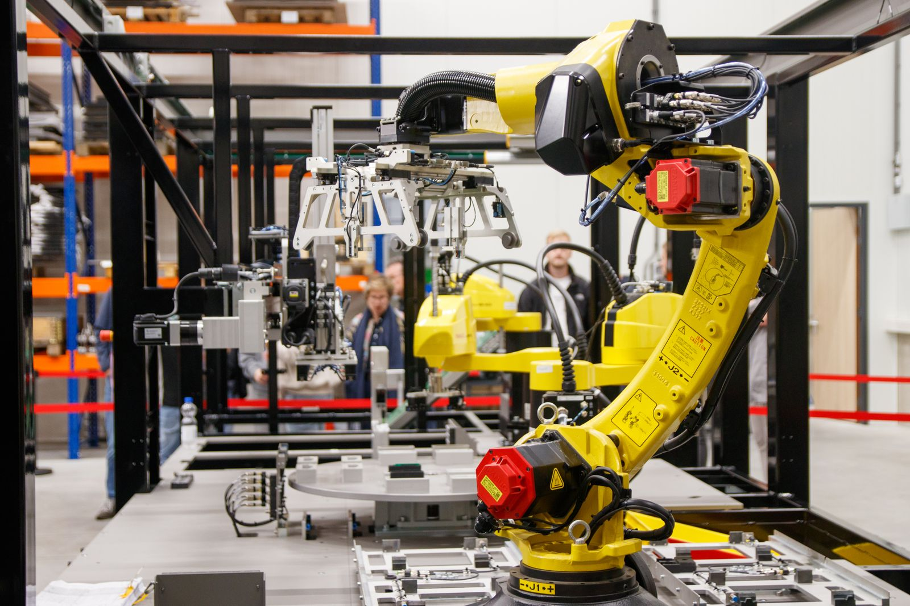

Log 01 — Motion control · Servo tuning · Prototype mechatronics
Motion is easy. Controlled motion is the job.
I am Katrin Vogel, a mechatronics engineer in Munich. Product teams, research labs and automation firms bring me the axes that buzz, overshoot, creep or fault — and the prototypes whose motors were specified by optimism. I measure first, tune second, and leave a log the next engineer can read.

Entry 02 — Services
Three ways to hire the bench
Motion audit
Two days on site before anyone touches a gain. I log the actual following error and step response of your axes, find the resonance, the inertia mismatch or the undersized motor, and hand you written findings with the traces attached. Fixed price — and credited in full if you go on to book the tuning.
Servo tuning & commissioning
The loop closed properly: gains derived for your real inertia, filters set from a measured frequency response, move profiles shaped so the mechanics stop ringing. Tuned at your worst-case payload, not the demo payload — and verified over a production log, not a single move.
Prototype mechatronics & sizing
Motor and gearbox sizing from the torque maths up, before metal is cut. I write the sizing sheet your team can defend in a design review — load, inertia, duty cycle, thermal margin — and stay through first motion to prove the sheet was right.
Entry 03 — The tuning bench
Same axis, same step command, three tunes
Every tuning job is this choice. The scope below is a schematic drawn from the bench rig's logged data for a 100% position step on Axis 2: the dashed blue line is the command, the orange trace is where the axis actually went. Pick a tune and read what it costs.
Tuned the tune that ships
Kp 26.0 · Ki 12.0 · Kd 1.80- Peak overshoot
- ≈ 2%
- Rise time 10–90%
- 0.22 s
- Settling time ±2%
- 0.35 s
- Steady-state error
- 0%
One clean move. A breath of overshoot you can measure but not hear, then the axis sits still and holds against disturbance. No buzz, no creep, cycle time intact. This is the tune that ships.
Bench card — the same numbers, in print (table scrolls on small screens)
| Preset | Kp | Ki | Kd | Overshoot | Rise | Settling | SS err |
|---|---|---|---|---|---|---|---|
| Under-damped | 42.0 | 18.0 | 0.40 | 28% | 0.19 s | 1.1 s | 0% |
| Tuned | 26.0 | 12.0 | 1.80 | ≈ 2% | 0.22 s | 0.35 s | 0% |
| Over-damped | 9.0 | 6.0 | 2.60 | 0% | 0.92 s | 1.5 s | 0% |
The three terms, in plain words: overshoot is how far past the target the axis travels before coming back; settling time is how long until it stays inside ±2% of the target for good; steady-state error is the gap that never closes — zero here, because all three tunes keep their integral term. The gains are this rig's, on this axis: yours will differ, which is rather the point of measuring first. Feedback quality sets the floor under all of it — a 17-bit encoder gives 131,072 counts per revolution, about 0.0027° per count, and no tune can settle finer than the feedback can see.
Entry 04 — The first sum of every sizing job
Torque is force times radius. Start there.
Before acceleration, before duty cycles: what does gravity alone demand from a horizontal axis holding a load at arm's length? Move the sliders. The design figure applies the ×2 safety factor I size with — real sizing then adds acceleration torque and a thermal check on top.
Worst case, as sizing must be: arm horizontal, load at full reach, holding still. A sizing signal for a first conversation — never a quotation.
τ = m × g × r · g = 9.81 m/s² · design torque = static × 2 (safety factor)
static holding torque
design torque with the ×2 factor applied
Size this axis for at least 11.8 N·m continuous, then add acceleration torque for your move profile on top — gravity is only the part that never switches off.
Check the machine against print: set 2.0 kg and 0.30 m and it must read 5.9 N·m static, 11.8 N·m design — because 2.0 × 9.81 × 0.30 = 5.886. Case 02 in the case log is what happens when nobody runs this sum before ordering motors.
Entry 05 — Engagement register
Recent and current work
| Engagement | Client | Axes | Status |
|---|---|---|---|
| Pick-and-place cell re-tune — Case 01 | Packaging machinery OEM | 4 | Complete · 2024 |
| Prototype arm axis sizing — Case 02 | Research-lab spinout | 6 | Complete · 2025 |
| Drive-line retrofit, no redesign — Case 03 | Automotive supplier | 14 | Complete · 2023 |
| Gantry line tune at worst-case payload | Furniture hardware maker | 3 | In progress |
| Motion audit, filling line | Food & beverage OEM | 8 | Booking · March |
Client names are withheld — the machines are theirs. Every completed engagement above is written up in the case log with its numbers.
Entry 06 — Fees, in print
What it costs, before you ask
What moves the price
- Axis count and inertia ratio — a load that outweighs the rotor 10:1 tunes slower than one at 3:1.
- Cycle-time target — the last 10% of speed costs more than the first 90%.
- Payload range — tuning must hold at the heaviest part, not the lightest.
- Documentation & safety sign-off — a research rig and a production line are different paperwork.
Entry 07 — From Case 01
“Katrin found in two days what three service visits hadn't: the gains were fine for the old gripper and wrong for the new one, and the gantry had a resonance nobody had measured. She left us a tune that holds ±0.03 mm and a log our own technicians can actually follow.”
An axis misbehaving?
Send the machine type, the axis count, and what it does wrong. If you have a trace or an error log, attach it — a bad trace is worth a page of description.
Start with the audit — €1,900 fixed